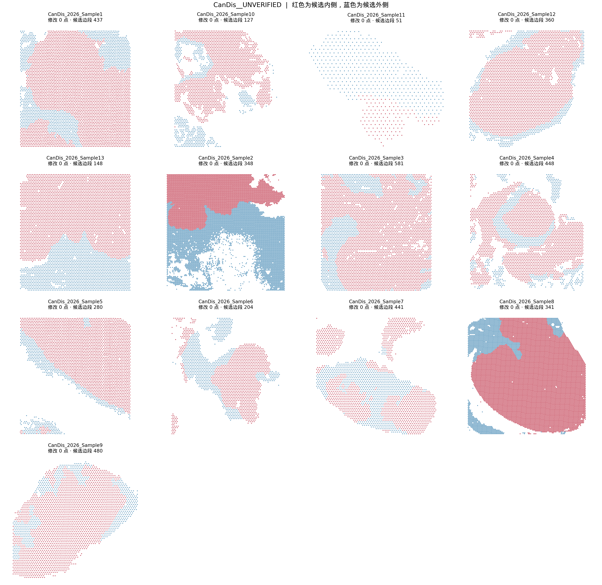
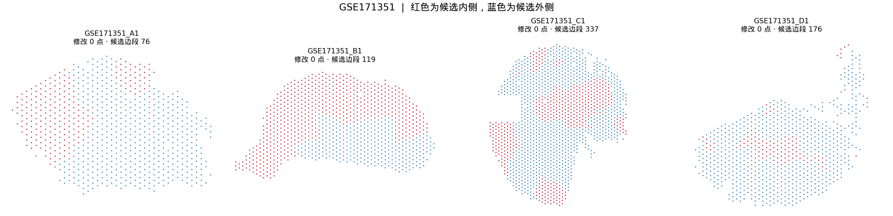
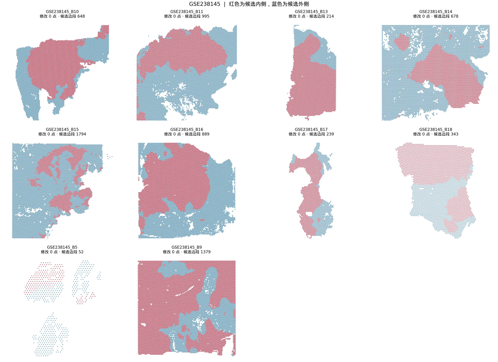
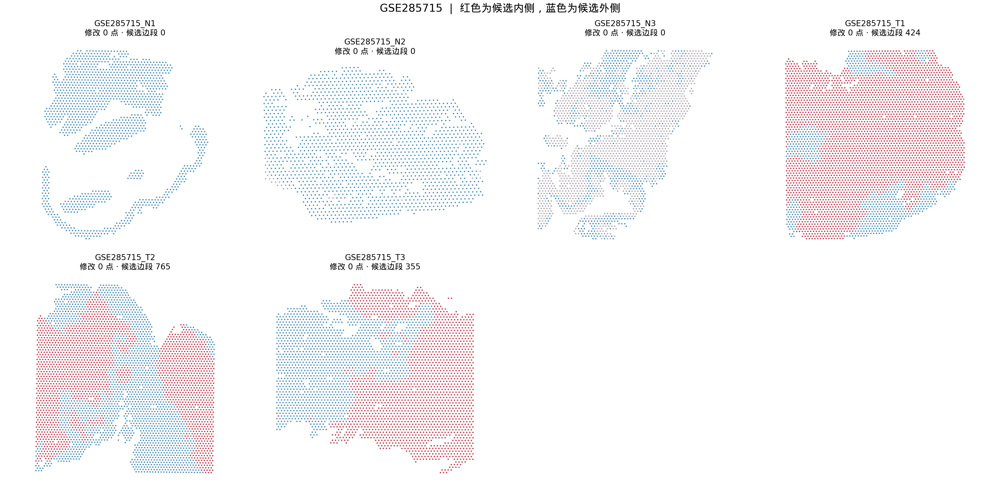
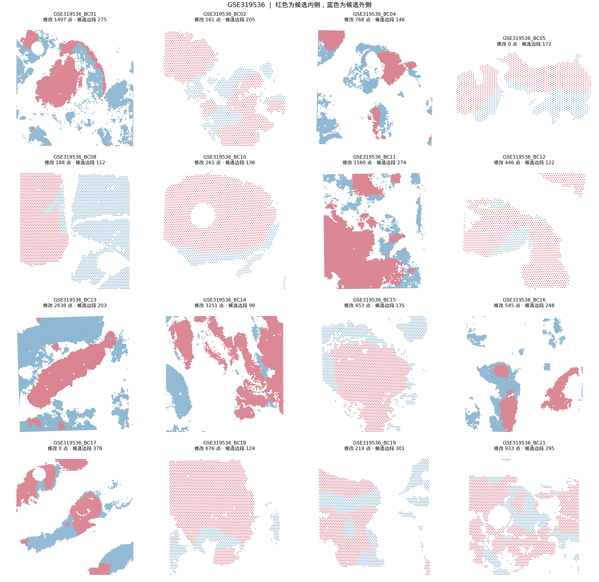
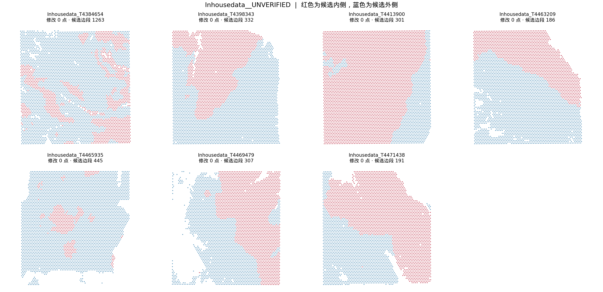
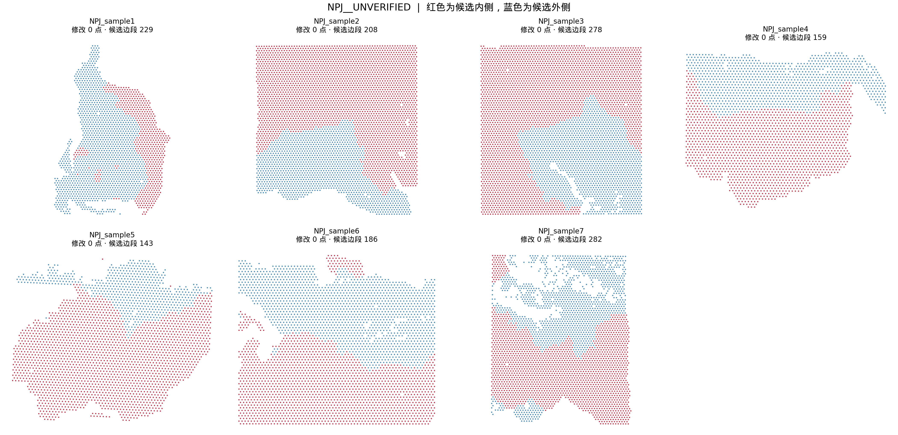

63 张切片的正式计算候选位置。可用 section_id 与原始 barcode 一对一合并。
下载完整标签表（TSV.gz） · 方法与读取示例 · 结果说明

| 切片 | spot | 修改点 | 候选外缘边段 | 200 μm 分带可判 |
|---|---|---|---|---|
| CanDis_2026_Sample1 | 4823 | 0 | 437 | 4247 |
| CanDis_2026_Sample10 | 2360 | 0 | 127 | 1098 |
| CanDis_2026_Sample11 | 577 | 0 | 51 | 359 |
| CanDis_2026_Sample12 | 3508 | 0 | 360 | 2854 |
| CanDis_2026_Sample13 | 4835 | 0 | 148 | 3799 |
| CanDis_2026_Sample2 | 10062 | 0 | 348 | 7903 |
| CanDis_2026_Sample3 | 4818 | 0 | 581 | 3603 |
| CanDis_2026_Sample4 | 3118 | 0 | 448 | 2180 |
| CanDis_2026_Sample5 | 3125 | 0 | 280 | 2634 |
| CanDis_2026_Sample6 | 1985 | 0 | 204 | 1376 |
| CanDis_2026_Sample7 | 2295 | 0 | 441 | 1722 |
| CanDis_2026_Sample8 | 11958 | 0 | 341 | 10379 |
| CanDis_2026_Sample9 | 2893 | 0 | 480 | 2594 |

| 切片 | spot | 修改点 | 候选外缘边段 | 200 μm 分带可判 |
|---|---|---|---|---|
| GSE171351_A1 | 768 | 0 | 76 | 548 |
| GSE171351_B1 | 1017 | 0 | 119 | 738 |
| GSE171351_C1 | 1469 | 0 | 337 | 1155 |
| GSE171351_D1 | 832 | 0 | 176 | 531 |

| 切片 | spot | 修改点 | 候选外缘边段 | 200 μm 分带可判 |
|---|---|---|---|---|
| GSE238145_B10 | 7399 | 0 | 648 | 6504 |
| GSE238145_B11 | 10309 | 0 | 995 | 9119 |
| GSE238145_B13 | 4881 | 0 | 214 | 4208 |
| GSE238145_B14 | 10435 | 0 | 678 | 9178 |
| GSE238145_B15 | 9386 | 0 | 1794 | 8431 |
| GSE238145_B16 | 12226 | 0 | 889 | 10978 |
| GSE238145_B17 | 2399 | 0 | 239 | 1744 |
| GSE238145_B18 | 3303 | 0 | 343 | 2849 |
| GSE238145_B5 | 639 | 0 | 52 | 146 |
| GSE238145_B9 | 13287 | 0 | 1379 | 11816 |

| 切片 | spot | 修改点 | 候选外缘边段 | 200 μm 分带可判 |
|---|---|---|---|---|
| GSE285715_N1 | 1417 | 0 | 0 | 0 |
| GSE285715_N2 | 1722 | 0 | 0 | 0 |
| GSE285715_N3 | 2489 | 0 | 0 | 0 |
| GSE285715_T1 | 4285 | 0 | 424 | 3629 |
| GSE285715_T2 | 3987 | 0 | 765 | 3267 |
| GSE285715_T3 | 3341 | 0 | 355 | 2432 |

| 切片 | spot | 修改点 | 候选外缘边段 | 200 μm 分带可判 |
|---|---|---|---|---|
| GSE319536_BC01 | 5278 | 1497 | 275 | 2421 |
| GSE319536_BC02 | 2035 | 161 | 205 | 1316 |
| GSE319536_BC04 | 3484 | 768 | 146 | 1270 |
| GSE319536_BC05 | 1550 | 0 | 172 | 1078 |
| GSE319536_BC08 | 3444 | 188 | 112 | 1931 |
| GSE319536_BC10 | 2499 | 261 | 136 | 1954 |
| GSE319536_BC11 | 6859 | 1560 | 274 | 4325 |
| GSE319536_BC12 | 1654 | 446 | 122 | 1142 |
| GSE319536_BC13 | 7758 | 2638 | 203 | 5043 |
| GSE319536_BC14 | 5864 | 3251 | 98 | 2131 |
| GSE319536_BC15 | 2698 | 453 | 135 | 1666 |
| GSE319536_BC16 | 3326 | 545 | 248 | 1374 |
| GSE319536_BC17 | 4072 | 0 | 378 | 2615 |
| GSE319536_BC18 | 2847 | 676 | 124 | 2202 |
| GSE319536_BC19 | 2090 | 219 | 301 | 1470 |
| GSE319536_BC21 | 2583 | 933 | 295 | 1388 |

| 切片 | spot | 修改点 | 候选外缘边段 | 200 μm 分带可判 |
|---|---|---|---|---|
| Inhousedata_T4384654 | 4755 | 0 | 1263 | 4262 |
| Inhousedata_T4398343 | 4691 | 0 | 332 | 4000 |
| Inhousedata_T4413900 | 4969 | 0 | 301 | 4503 |
| Inhousedata_T4463209 | 4441 | 0 | 186 | 3595 |
| Inhousedata_T4465935 | 4067 | 0 | 445 | 3518 |
| Inhousedata_T4469479 | 3917 | 0 | 307 | 3247 |
| Inhousedata_T4471438 | 4373 | 0 | 191 | 3570 |

| 切片 | spot | 修改点 | 候选外缘边段 | 200 μm 分带可判 |
|---|---|---|---|---|
| NPJ_sample1 | 2076 | 0 | 229 | 1573 |
| NPJ_sample2 | 4506 | 0 | 208 | 3845 |
| NPJ_sample3 | 4881 | 0 | 278 | 4222 |
| NPJ_sample4 | 2639 | 0 | 159 | 2173 |
| NPJ_sample5 | 2815 | 0 | 143 | 2277 |
| NPJ_sample6 | 3497 | 0 | 186 | 2917 |
| NPJ_sample7 | 3386 | 0 | 282 | 2526 |